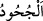
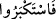
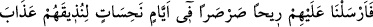
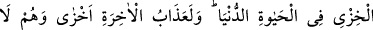
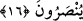

güvenerek: Bizden daha kuvvetli kim var? dediler.” Âd’lıların boyu onsekiz zirâ (9-10
metre) olup o kadar güçlü idiler ki herhangi bir Âd’lı, dağdan koca bir kayayı sökebilir
ve ona istediğini yapardı. Bu müthiş güçleri sayesinde ilâhî azâbı da
savuşturabileceklerini zannediyorlardı, ama azap kendilerini çepeçevre kuşatınca,
güçleri kendilerine hıyânet etti. Allah kendilerini şu sözüyle reddediyor:
“Onlar,” yani güçleriyle mağrûr olan bu insanlar, “kendilerini” ve aralarında semavî
cisimler ve dağlar gibi muazzam varlıkların da bulunduğu her şeyi “yaratan Allah’ın,
onlardan daha kuvvetli olduğunu görmediler mi?”
Allah’ın özelliği belirtilirken, ‘gökleri ve yeri yaratan’ şeklinde bir sıla cümlesi
yerine ‘kendilerini yaratan’ ifâdesi kullanılması müthiş bir güce sahip olduklarına dâir
iddiâlarından kaynaklanmaktadır.
Onlar gaflete düşüp görmeye benzer âşikâr bir bilgiyle bilmiyorlar mıydı? Allah
onlardan çok daha güçlüdür, kudretlidir! Yaratıcının kudreti yarattığı varlığın
kudretinden elbette fazla olacaktır. Çünkü mahlûkun kudreti Hâlik’ın kudretine bağlıdır.
‘Kuvvet’ kelimesi, bünyenin sağlamlığından kinâye olup za’fın tersidir. İsm-i tafdîl
sıygası, mufaddal ile mufaddal aleyhin fiilin özünde ortak olduklarını gösterir; hâlbuki
Allah ile insanoğlu arasında böyle bir ortaklık söz konusu değildir. Çünkü Allah böyle
bir şeyden münezzehtir. Demek ki kuvvet ile mecâzen kudret kasdedilmektedir; zîrâ
‘kudret’ -bünye sağlamlığı mânâsındaki- ‘kuvvet’ten kaynaklanmıştır.
“Onlar”, yani Âd kavmi, taassupları yüzünden “bizim” elçilerimize indirdiğimiz
“âyetlerimizi/mûcizelerimizi inkâr ediyorlardı.”
(
), bile bile inkâr etmek demektir; yani gerçek yüzünü bildikleri halde inkâr
etmişlerdir; tıpkı emânetçinin kendisine emânet edilen bir şeyi inkâr etmesi gibi…
Cümle, (
)’ya mâtûf olup iki cümle arasındaki ifâdeler, kâfirlerin dile getirdiği
berbat düşünceleri reddetmek için araya cümle-i itirâzıyye olarak getirilmiştir. Şöyle
denmek istenmektedir: Bunlar istikbâr ve yeryüzünde azma fiilleri ile -ki her ikisi de
itâatten çıkış anlamına gelir- yaratılmışlara güzel davranmama ve bile bile inkâr
fiillerini aynı anda gerçekleştirmişlerdir. Allah bunlara azâbı tabiî ki musallat edecekti!
Nitekim şöyle buyuruyor:
16. Bundan dolayı biz de onlara dünya hayatında zillet azâbını tattırmak için o
uğursuz günlerde soğuk bir rüzgâr gönderdik. Âhiret azâbı elbette daha çok
rüsvay edicidir. Onlara yardım da edilmez.
“Bundan dolayı biz de onlara dünya hayatında zillet azâbını tattırmak için” Tâ ki